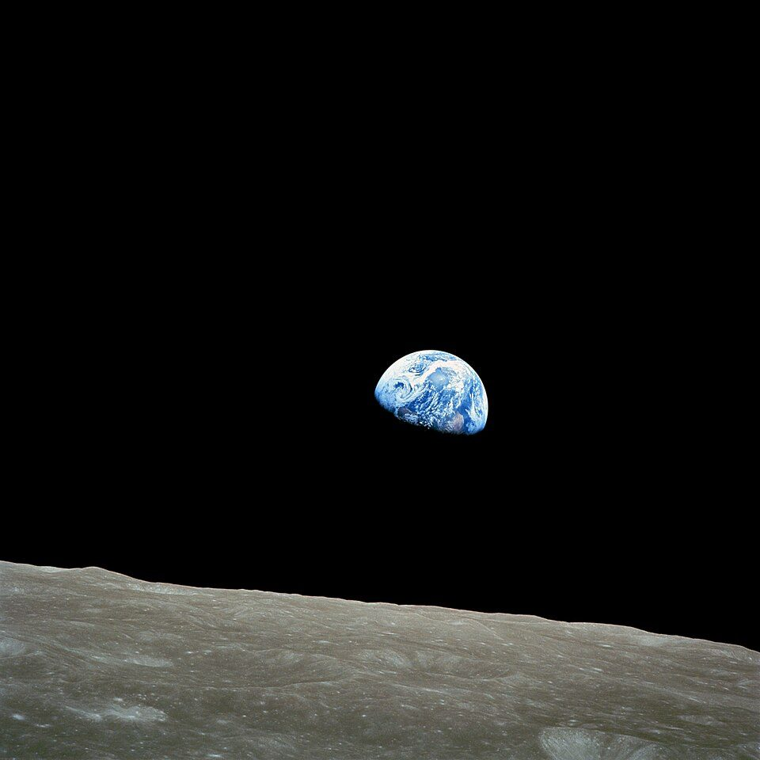

The solar system
One star, eight planets, hundreds of moons and millions of smaller bodies that have travelled together for 4.6 billion years.


The solar system is our cosmic neighbourhood: the Sun and everything its gravity holds on to. It includes eight planets, at least five recognised dwarf planets, around 300 confirmed moons, more than a million catalogued asteroids and a vast number of comets. The Sun holds 99.86% of all the mass: the planets, added together, are almost a footnote.
How it formed
About 4.6 billion years ago, a cloud of gas and dust in the Milky Way began to collapse, probably nudged by the shock wave of a nearby supernova. As it shrank, it spun faster and flattened into a disc. At the centre, pressure and temperature ignited nuclear reactions: the Sun was born.
In the disc, dust grains stuck together and built planetesimals, kilometre-sized rocks that collided and grew. Close to the Sun only metals and rock survived the heat, which gave rise to the rocky planets. Farther out, beyond the so-called frost line, water and other compounds froze, embryos grew much faster and captured huge envelopes of hydrogen and helium: the gas giants.
The eight planets, in order
A classic way to remember them is "My Very Educated Mother Just Served Us Noodles": Mercury, Venus, Earth, Mars, Jupiter, Saturn, Uranus and Neptune.
| Planet | Average distance from the Sun | Diameter | Known moons | One year lasts |
|---|---|---|---|---|
| Mercury | 58 million km | 4,879 km | 0 | 88 days |
| Venus | 108 million km | 12,104 km | 0 | 225 days |
| Earth | 150 million km | 12,742 km | 1 | 365.25 days |
| Mars | 228 million km | 6,779 km | 2 | 687 days |
| Jupiter | 778 million km | 139,820 km | 97 | 11.9 years |
| Saturn | 1,434 million km | 116,460 km | 274 | 29.5 years |
| Uranus | 2,871 million km | 50,724 km | 29 | 84 years |
| Neptune | 4,495 million km | 49,244 km | 16 | 165 years |
Three families of worlds
The rocky or terrestrial planets (Mercury, Venus, Earth and Mars) are small and dense, with solid surfaces and few or no moons. The gas giants (Jupiter and Saturn) are made mostly of hydrogen and helium and have no surface to stand on. The ice giants (Uranus and Neptune) contain a lot of water, ammonia and methane as hot, dense fluids beneath their atmospheres.
Beyond the planets
Between Mars and Jupiter lies the asteroid belt. Beyond Neptune, the Kuiper belt is home to Pluto and thousands of icy worlds. And much farther away, perhaps a light year out, the Oort cloud is thought to exist: a sphere of trillions of comet nuclei that marks the true edge of the Sun's domain.
An almost flat system
All the planets travel around the Sun in the same direction and almost in the same plane, a legacy of the disc they formed in. That is why, from Earth, the planets always appear near the same strip of sky, the ecliptic, along which the Sun and the Moon also move.


Videos to understand it better
- Solar System 101 | National GeographicNational Geographic · 39.8M views
- How big is the Solar System?Jared Owen · 28.9M views
Videos are from YouTube and belong to their creators. They only load when you click them. See all videos →